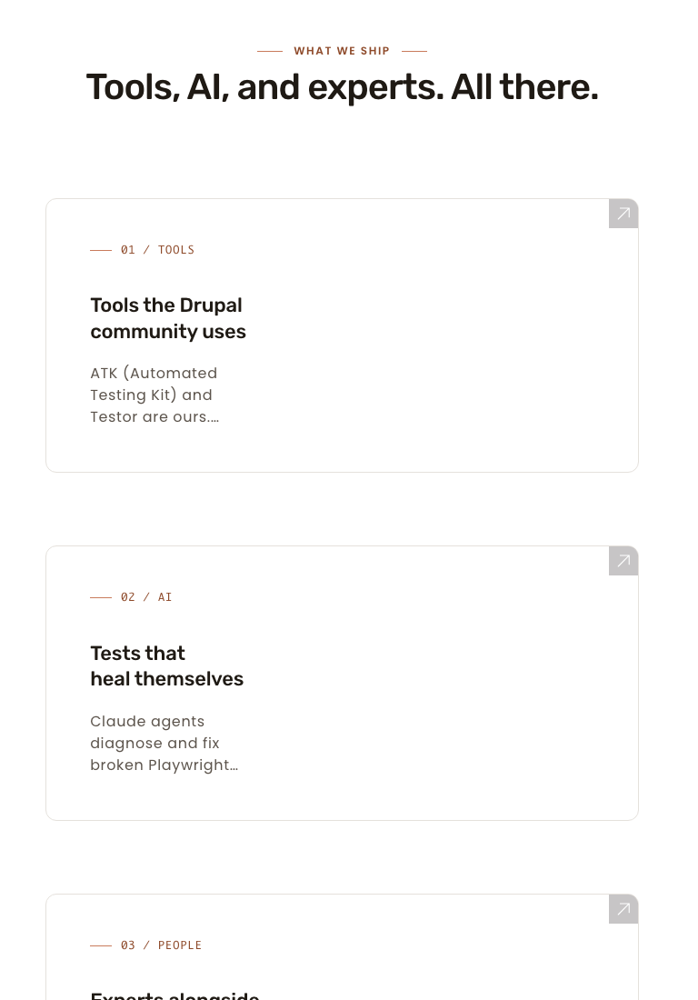

Phase 8.1 — Site header parity
2026-05-10 · branch aa/pl-homepage-phase-8.1-header · audit by S
PASS — site header parity met
Header-band crop deltas (top 150 px): 1280 = 3.54% · 768 = 2.46% · 375 = 4.42% ·
down from baseline 11.98 / 14.53 / 16.22%.
Whole-page deltas (~47–51%) are dominated by remaining out-of-scope sections (8.3 logo-grid text, 8.6 footer/FAQ) — see "What's different" below.
What I see different (plain-English)
In scope (sub-cycle 8.1) — all PASS or non-blocking
- Header height: live measures ~73 px at all three viewports (T's Playwright bbox); preview is 73 px. MATCH
- 1280 header layout: wordmark + 6 nav links inline, no CTA pill, no nav-label wrapping. MATCH
- 768 / 375 header layout: wordmark + hamburger button. MATCH
- 1280 nav cluster horizontal positioning: live's 6 nav links sit slightly left of preview (live nav cluster spans roughly x=325–1056; preview spans ~530–1200). The empty
header-navigation-wrapper__third div on live no longer carries the pill but doesn't add a flex-grow spacer, so the nav doesn't get pushed as far right as the preview. Visually subtle; no wrap, no overlap, no missing affordance. Drives ~3.54% of header-crop diff at 1280. DELTA, non-blocking
- Hamburger button frame at 768 / 375: live renders the hamburger glyph as a borderless icon; preview wraps it in a rounded-rectangle button outline. Touch target is 44×44 on both per T's measurement. Visually subtle; meets WCAG 2.5.5 either way. Drives the small remaining 2.46% / 4.42% header crop deltas. DELTA, non-blocking
- Phantom whitespace check (T flag): the empty
header-navigation-wrapper__third div renders as zero width. No phantom whitespace, no extra divider line. MATCH
Out of scope for 8.1 (still expected DELTA against preview; tracked for 8.3 / 8.6)
- Logo grid text-fallback at 768/375: still differs from preview. Tracked in sub-cycle 8.3. OUT OF SCOPE
- Footer CTA polish, FAQ icons, footer casing: still differ. Tracked in sub-cycle 8.6. OUT OF SCOPE
- Total page height: live full page 5348 / 6418 / 7804 px vs preview 4341 / 4829 / 6166 px. The cumulative ~1000–1600 px difference is what drives the 47–51% whole-page diff scores; once 8.3 and 8.6 land, this should close substantially.
Regression checks (8.2 / 8.4 / 8.5)
- 8.2 hero
padding-inline: 0 at 768: hero content fills viewport edge-to-edge; no horizontal overflow. PASS
- 8.4 feature cards 1-col stack at 768: three cards (01 / 02 / 03) stack vertically full-width as expected. PASS
- 8.5 hero
min-height: auto + padding-block: hero is no longer over-tall; CTA-to-next-band gap is tight. PASS
1280 × 800 — header band wipe-slider
Whole-page diff 50.67% (driven by out-of-scope sections); header crop (top 150 px) 3.54% (was 11.98% in baseline).
Header diff PNG (red overlay) — 1280
Header side-by-side composite — 1280 (live | preview)
768 × 1024 — header band wipe-slider
Whole-page diff 47.00%; header crop (top 150 px) 2.46% (was 14.53%).
Header diff PNG — 768
Header composite — 768
375 × 667 — header band wipe-slider
Whole-page diff 46.90%; header crop (top 150 px) 4.42% (was 16.22%).
Header diff PNG — 375
Header composite — 375
Regression spot-checks (8.2 / 8.4 / 8.5)
Hero band at 768 (8.2 padding-inline + 8.5 min-height/padding-block)
Live hero band at 768 fills viewport edge-to-edge; no horizontal scroll, eyebrow + H1 + body + dual CTAs render correctly. 8.2 + 8.5 hold
Feature cards at 768 (8.4 1-col stack of 3)

Three cards (01 Tools, 02 Tests that heal themselves, 03 Experts alongside) stack vertically full-width on live at 768. 8.4 holds
Per-section delta table
| Section | Viewport | Status | Description |
| Site header (band) | 1280 |
MATCH |
Wordmark + 6 inline nav, no pill, no wrap, ~73 px tall. Minor horizontal offset of nav cluster vs preview (non-blocking). |
| Site header (band) | 768 |
MATCH |
Wordmark + hamburger, ~73 px tall. Hamburger renders as borderless icon vs preview's bordered button (non-blocking). |
| Site header (band) | 375 |
MATCH |
Wordmark + hamburger, ~73 px tall. Same hamburger framing delta as 768 (non-blocking). |
| Hero band | 768 |
MATCH (8.2 + 8.5 regression) |
padding-inline 0 holds, no horizontal overflow, tight vertical rhythm. |
| Feature cards | 768 |
MATCH (8.4 regression) |
1-col stack of 3 cards confirmed. |
| Logo grid | 768 / 375 |
OUT OF SCOPE |
Text-fallback at narrow widths still differs — tracked in sub-cycle 8.3. |
| Footer CTA / FAQ icons / footer casing | all |
OUT OF SCOPE |
Tracked in sub-cycle 8.6. |
Files captured
Screenshots, diffs, composites under docs/pl2/handoffs/screenshots/cycle-8.1/:
- t3-homepage-{1280,768,375}-{live,preview}-20260510.png — full-page
- t3-homepage-{1280,768,375}-header-{live,preview}-20260510.png — header crop (150 px)
- t3-homepage-{1280,768,375}-{header,}-{diff,composite}-20260510.png — diffs & composites
- t3-homepage-768-hero-{live,preview}-20260510.png — hero crop for 8.2/8.5 regression
- t3-homepage-768-features-live-20260510.png — feature-cards crop for 8.4 regression